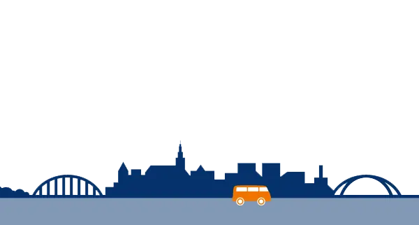

Makelaar
Kolmeijer Nijmegen

Kolmeijer Makelaars Nijmegen: Uw Vertrouwde Partner in Vastgoed
Kolmeijer Makelaars Nijmegen staat bekend als dé nummer 1 makelaar in de regio Nijmegen, met een sterke focus op persoonlijke benadering en maximale inzet voor zowel aan- als verkoop van woningen. Onze belofte van "No Cure No Pay" onderstreept onze toewijding aan uw succes en tevredenheid.
Waarom kiezen voor Kolmeijer Makelaars?
- No Cure No Pay: Onze dienstverlening is risicovrij; u betaalt alleen bij succes.
- Sterk door Service: Onze klantgerichte aanpak zorgt voor een soepele ervaring.
- Aantrekkelijke Courtages: Wij bieden competitieve tarieven zonder in te leveren op kwaliteit.
- Hoge Verkoopsnelheid en Opbrengst: Bewezen resultaten die spreken.
- Uitstekende Klantbeoordeling: Onze klanten waarderen ons gemiddeld met een 9,2.
- Innovatie: Wij blijven vooroplopen door voortdurend te innoveren in onze dienstverlening.
Onze Verkoopformule: Van Voorbereiding tot Verkoop
1. Voorbereiding: Onze makelaars komen persoonlijk langs om uw woning te bekijken en uw wensen te bespreken.
2. Presentatie: Onze professionele styliste en fotograaf zorgen voor een aantrekkelijke presentatie van uw huis.
3. Aanmelden & Bezichtigingen: Uw woning krijgt exclusieve plaatsing op ons platform en sociale media kanalen.
4. Verkocht: Wij zorgen voor de volledige afhandeling, van opstellen van de koopakte tot het beantwoorden van al uw vragen.
Onze Expertise van Kolmeijer Nijmegen
Met een team van 6 enthousiaste makelaars en 4 zorgvuldige binnendienst medewerkers, bieden wij sinds 2005 ongeëvenaarde expertise in Nijmegen. Onze marktleiderschap wordt bevestigd door meer dan 500 transacties per jaar, dankzij onze diepgaande marktkennis, voortdurende innovatie en ongeëvenaarde klantenservice.
Innovatie aan de Basis van Ons Succes
Van het aanbieden van unieke woningwebsites tot het verzorgen van energielabels, wij zorgen ervoor dat onze verkopers en kopers profiteren van de nieuwste technologieën en diensten. Onze samenwerking met Copaan.nl en de ontwikkeling van onze eigen veilingsite zijn slechts enkele voorbeelden van hoe wij vooroplopen in de branche.
Onze Belofte: No Cure No Pay
Bij Kolmeijer Makelaars Nijmegen draait alles om wederzijds vertrouwen en een transparante aanpak. Ons "No Cure No Pay"-principe garandeert dat u nooit verborgen kosten zult tegenkomen. Of u nu uw huis wilt verkopen of de aankoop van uw droomwoning wilt realiseren, ons team staat klaar om u met enthousiasme en professionaliteit te begeleiden.
Contactgegevens
Wilt u meer weten of een afspraak maken? Neem dan contact met ons op via telefoon of stuur ons een bericht. Ontdek zelf waarom Kolmeijer Makelaars de voorkeursmakelaar is in Nijmegen en omstreken.
Bezoek Kolmeijer Makelaars Nijmegen: voor meer informatie over onze diensten en om uw vastgoedreis te beginnen met het team dat uw belangen op de eerste plaats zet.
Contact en openingstijden
- AdresTooropstraat 11, 6521 NH Nijmegen Kaart
- Openingstijden
maandag 09:00–17:00 dinsdag 09:00–17:00 woensdag 09:00–17:00 donderdag 09:00–17:00 vrijdag 09:00–17:00 zaterdag gesloten zondag gesloten - Goed om te wetenverkoopaankooptaxatieNVMvaste courtageparticulierenavond of weekend
- Contactkolmeijernijmegen.nl
0243609552
wonen@kolmeijernijmegen.nl
Instagram · Facebook - ReviewsBekijk de reviews op Google Maps
Hier vind je Kolmeijer Nijmegen
Kaart: © OpenStreetMap-bijdragers